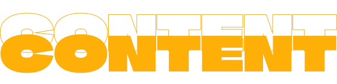

05
DURATION: 4 WEEKS
(25/11/24 - 20/12/24)
LEARNINGS
- Adobe Premiere Pro
- GitHub collaboration
- Scrum & scrumboard
- Group work contract
- Documentation files
- LottieFiles
- Sustainable web design
- HTML forms
- Redesign of visual identity
- Pecha Kucha presentation
- Communication with a client
Unit 5 was all about how to create and manipulate content for digital use. We mostly produced videos using Adobe Premiere Pro, but also took and manipulated photographs for use both in static and dynamic sites. for example in LottieFiles, which are smaller files than animations or videos.
We all edited a variety of videos, including one about a person’s passion who we interviewed and gathered the material to make a one-minute video about. I selected an artist I know and visited her studio.
The main project, which was done in groups of 4, was to redesign the visual identity and content layout of an existing company website. We helped the funk band Out Of Season by recreating their homepage.